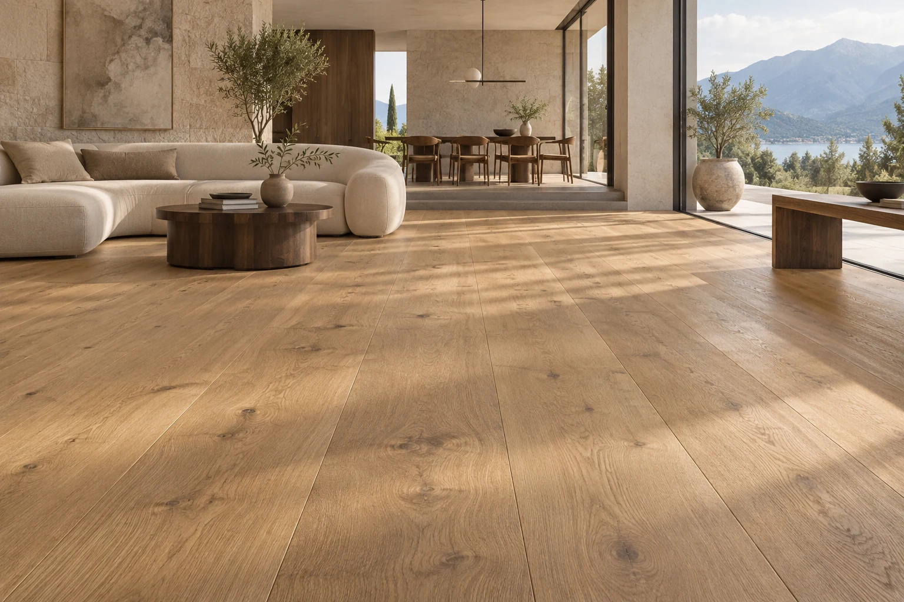

Storitve
Dober občutek. Od začetka do konca.
Od svetovanja in izmere do polaganja ter obnove parketa. Z vami uskladimo material, obseg del in izvedbo.
Izmera in predračun
Vizualizacija prostora za navdihKAJ LAHKO NAREDIMO ZA VAS
Celota je v detajlih.
Svetovanje
Prisluhnemo vašim željam in pomagamo izbrati oblogo glede na prostor, uporabo in proračun.
Izmera
Zberemo mere in podatke, na katerih temelji dober načrt vašega projekta.
Predračun
Opredelimo material, količine, zaključke in dogovorjeni obseg del.
Priprava podlage
Pripravo uskladimo s stanjem prostora in zahtevami izbranega sistema.
Dobava in polaganje
Izbrano oblogo dobavimo in izvedemo dogovorjeno polaganje.
Brušenje in obnova
Preverimo obstoječi parket in predlagamo možnosti njegove obnove.
Oljenje in lakiranje
Uskladimo površinsko obdelavo, želeni videz in način nege.
Montaža letev
Poskrbimo za zaključne letve in profile v dogovorjenem obsegu.
OD PRVE IDEJE DO VAŠIH TAL
Dober začetek. Lep zaključek.
Pogovor in svetovanje
Opišete prostor, svoje želje in približen čas izvedbe. Skupaj začrtamo smer.
Izmera in pregled
Uskladimo obisk ter preverimo mere, podlago in posebnosti prostora.
Predračun in dogovor
Opredelimo material, obseg del in termin, da veste, kaj lahko pričakujete.
Izvedba in predaja
Izvedemo dogovorjena dela, uredimo zaključke in pojasnimo nego vaših novih tal.
KAJ LAHKO PRIČAKUJETE
Jasen dogovor. Skrbna izvedba.
Dogovorjen obseg
Pred začetkom uskladimo material, potek in termin. Odprta vprašanja razjasnimo pravočasno.
Pregleden predračun
Postavke ponudbe in morebitna dodatna dela opredelimo glede na vaš projekt.
Premišljen zaključek
Uskladimo zaključke, predajo in navodila za nego izbrane površine.
NAREDIMO PRVI KORAK
Načrtujmo vaš naslednji korak.
Povejte nam, kakšen prostor urejate. Pomagali vam bomo pri izbiri, izmeri in načrtovanju izvedbe.
Izmera in predračun